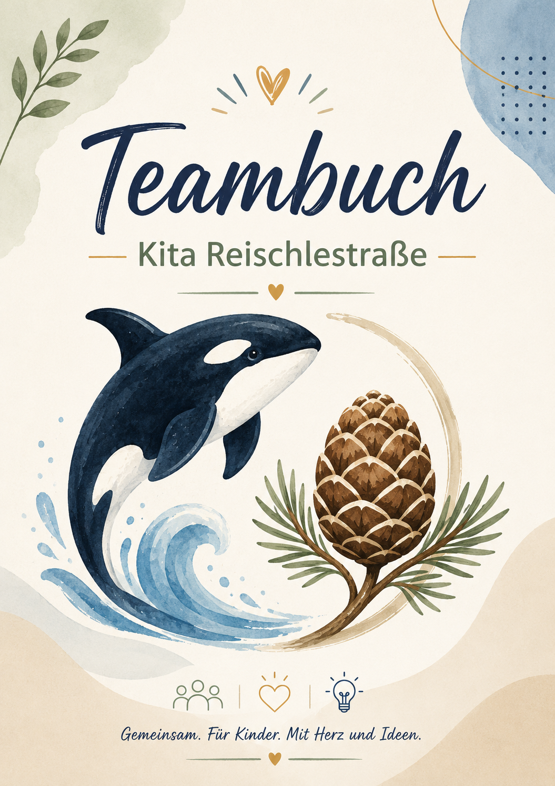
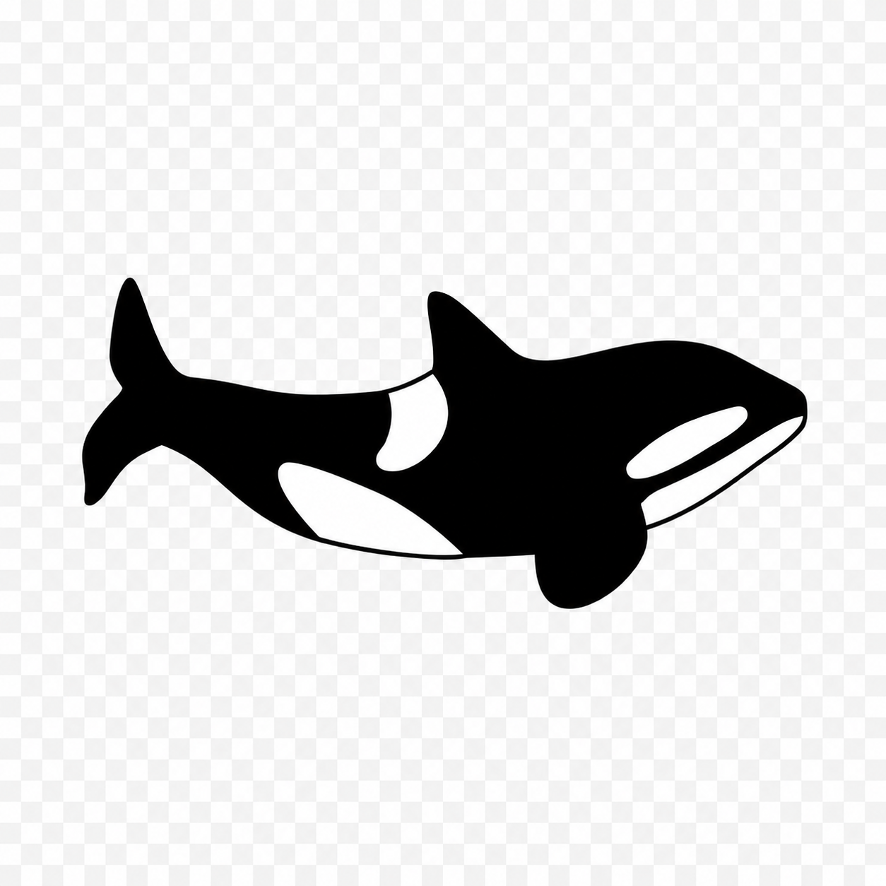
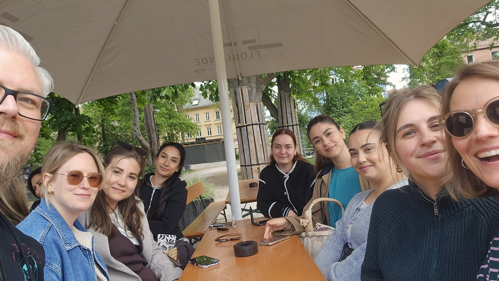
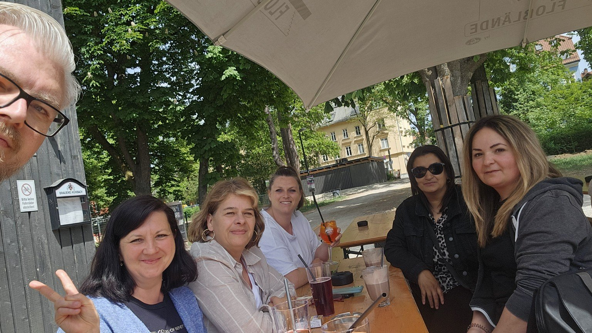

Foto Stammgruppe
Unser Motto
Vorschule
Wer sind wir? Was ist uns wichtig?

Das sind wir
Dieses Teambuch wächst mit uns. Es zeigt, wer wir als Team sind, was uns in der Kita Reischlestraße wichtig ist und wie wir unseren Alltag gemeinsam gestalten.
Hier sammeln wir Fotos, Gedanken, Vereinbarungen, Ideen und Ergebnisse aus unseren Planungstagen. Es ist kein fertiges Handbuch, sondern unser gemeinsamer Arbeitsstand.

Orka-Fakt: „Orkas leben in Gruppen, sogenannten Pods. Sie lernen voneinander und geben Wissen weiter – genau wie ein gutes Team.“
Überblick
Orka-Fakt: „Jeder Orka hat eine eigene Rückenflosse. Auch im Team bringt jede Person etwas Eigenes mit.“
Das macht uns aus
Welche Begriffe beschreiben uns? Was ist uns im Alltag mit den Kindern, den Familien und im Team besonders wichtig?
Orka-Fakt: „Orkas haben eigene Dialekte. Jede Gruppe klingt ein bisschen anders – so wie auch jedes Team seine eigene Kultur entwickelt.“
Unsere Stammgruppen
Jede Stammgruppe stellt sich mit Foto, Team, Raum, Besonderheiten und einem kurzen Blick auf die Kinder vor.
Wer sind wir? Was ist uns wichtig?
Wer sind wir? Was ist uns wichtig?
Wer sind wir? Was ist uns wichtig?
Wer sind wir? Was ist uns wichtig?
Wer sind wir? Was ist uns wichtig?
Orka-Fakt: „Junge Orkas bleiben lange nah bei ihrer Familie. Bindung, Orientierung und sichere Beziehungen sind auch für Kinder grundlegend.“
Unsere Lernwerkstätten
Unsere Lernwerkstätten bieten Kindern unterschiedliche Erfahrungsräume. Hier sammeln wir Fotos, Materialien, Regeln, pädagogische Ziele und Zuständigkeiten.
Material, Regeln, Ziele, Zuständigkeiten.
Material, Regeln, Ziele, Zuständigkeiten.
Material, Regeln, Ziele, Zuständigkeiten.
Material, Regeln, Ziele, Zuständigkeiten.
Material, Regeln, Ziele, Zuständigkeiten.
Material, Regeln, Ziele, Zuständigkeiten.
Material, Regeln, Ziele, Zuständigkeiten.
Material, Regeln, Ziele, Zuständigkeiten.
Orka-Fakt: „Orkas sind neugierig und sehr lernfähig. Sie erkunden ihre Umgebung aktiv – ähnlich wie Kinder in gut vorbereiteten Lernräumen.“
So arbeiten wir
Hier sammeln wir Tagesstruktur, Zuständigkeiten, Absprachen, Kommunikationswege und Dinge, die neuen Kolleginnen Orientierung geben.
Bringzeit, Morgenkreis, pädagogische Zeit, Mittagessen, Ruhezeit, Freispiel und Spätdienst.
Wie geben wir Informationen weiter? Was gehört in Übergaben? Was muss sofort ins Team?
Orka-Fakt: „Orkas jagen oft gemeinsam und stimmen sich dabei ab. Gute Zusammenarbeit entsteht durch klare Signale und Vertrauen.“
Das ist uns wichtig
Hier sammeln wir Themen, die an jedem Planungstag mitgedacht werden: Nachhaltigkeit, digitale Bildung, Beteiligung, Kinderschutz und ein achtsamer Umgang miteinander.
Orka-Fakt: „Orkas passen ihr Verhalten an ihre Umgebung an. Auch wir entwickeln unsere Arbeit weiter, ohne unsere Grundhaltung zu verlieren.“
Das haben wir vereinbart
Hier sammeln wir verbindliche Ergebnisse aus den Planungstagen. Was hier steht, soll im Alltag helfen und Orientierung geben.
Orka-Fakt: „Orkas behalten erlerntes Verhalten über lange Zeit. Auch unsere Vereinbarungen sollen nicht nur besprochen, sondern im Alltag wiedererkannt werden.“
Bilder & Momente
Hier sammeln wir Bilder aus unserem Kita-Alltag: Planungstage, Feste, besondere Momente, Teamfotos und kleine Einblicke in unsere Arbeit.
Fotos, Ergebnisse, Arbeitsphasen, Wordclouds und gemeinsame Entwicklungsschritte.
Sommerfest, Ausflüge, Feiern, Aktionen und besondere Tage im Kita-Jahr.
Kleine besondere Augenblicke, die zeigen, was unser Haus ausmacht.
Planungstag an der Floßlände – gemeinsame Zeit, Austausch und besondere Momente im Team.


Gemeinsame Bilder, Kleinteams, Quatschbilder und Fotos für Teamwand und Handbuch.
Bilder der Stammgruppen, Räume, Teams und Besonderheiten.
Einblicke in Rollenspiel, Bauen, Atelier, Bistro, Halle, Medien, Garten und Bewegung.
Orka-Fakt: „Orkas erkennen sich an besonderen Merkmalen wieder. Auch Bilder helfen uns, Erinnerungen, Entwicklung und Zugehörigkeit sichtbar zu machen.“
Checklisten & Vorlagen
Hier sammeln wir praktische Checklisten, Bögen und Vorlagen, die im Alltag Orientierung geben und die Zusammenarbeit erleichtern.
Was muss morgens vorbereitet, geprüft und weitergegeben werden?
Was ist am Nachmittag wichtig, bevor das Haus schließt?
Was muss vor, während und nach der Urlaubsplanung beachtet werden?
Was ist bei Krankheit zu tun?
Vorlagen für Praxisanleitung, Reflexion und Entwicklungsgespräche.
Strukturierte Vorbereitung, Gesprächsführung und Nachbereitung.
Vorlagen für Teamsitzungen, Elterngespräche und Absprachen.
Orka-Fakt: „Orkas nutzen wiederkehrende Strategien, die in ihrer Gruppe weitergegeben werden. Auch Checklisten helfen uns, Wissen verlässlich im Team zu teilen.“